내 캐릭터, 굿즈와 카드뉴스가 되다
하나의 캐릭터를 여러 곳에 쓰는 원소스 멀티유즈(하나를 만들어 여러 곳에 쓰는 방식) 두 번째 시간입니다. 1교시는 지난 시간에 하던 굿즈를 끝까지 완성하고, 2교시는 같은 캐릭터로 카드뉴스를 만듭니다.
오늘의 학습 목표
- 프로젝트 소스에 캐릭터 기준 그림을 넣고, @ 없이도 같은 캐릭터가 나오게 할 수 있다.
- 굿즈마다 그림이 들어갈 칸의 비율이 다르다는 것을 알고, 칸에 맞는 그림을 만들 수 있다.
- 캔바 목업스로 쿠션·머그·에코백·티셔츠·스티커 목업을 완성할 수 있다.
- 유튜브 영상이나 기사에서 근거를 모아(여러 기사를 표·엑셀로 모으는 크롤링 포함) 카드뉴스를 기획하고, 남의 글·사진을 쓸 때 지킬 점을 안다.
- 출처에 어울리는 색을 뽑아, 두 캐릭터가 나오는 카드뉴스를 9:16과 1:1로 한 장씩 만들 수 있다.
- 가게 정보(시간·가격·분위기·대표 색)를 정확히 넣어 캐릭터 활용형과 실사 SNS형 홍보 카드를 만들고, 핀터레스트 레퍼런스에서 구성만 배워 올 수 있다.
- 오늘 순서를 담은 카드뉴스 스킬을 챗GPT에 설치해, 한 줄 요청으로 카드뉴스 작업을 시작할 수 있다.
오늘 필요한 것
- 챗GPT 플러스 계정 (지난 시간 만든 내 캐릭터 프로젝트)
- 지난 시간 라이브러리에 저장한 앵커(기준 그림)·캐릭터 시트·표정 시트
- 캔바 계정 (없으면 , 무료)
- 카드뉴스로 만들고 싶은 유튜브 영상 주소 1개 또는 관심 기사 주제 1개
오늘의 흐름 한눈에 보기
오늘의 예시 캐릭터: 귀찮냥과 귀찮양
선생님 캐릭터 하나로도 충분히 따라 할 수 있습니다. 예시에서는 두 캐릭터가 함께 나와 역할을 나누는 장면까지 보여 드립니다. 친구 캐릭터가 있으면 같은 방법으로 넣어 보세요.
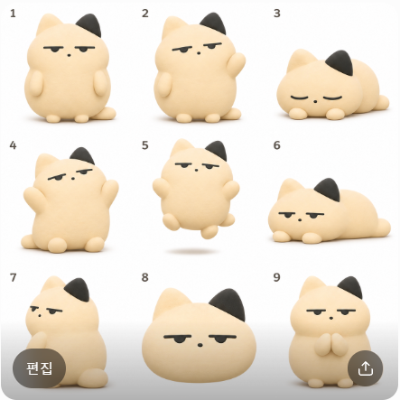
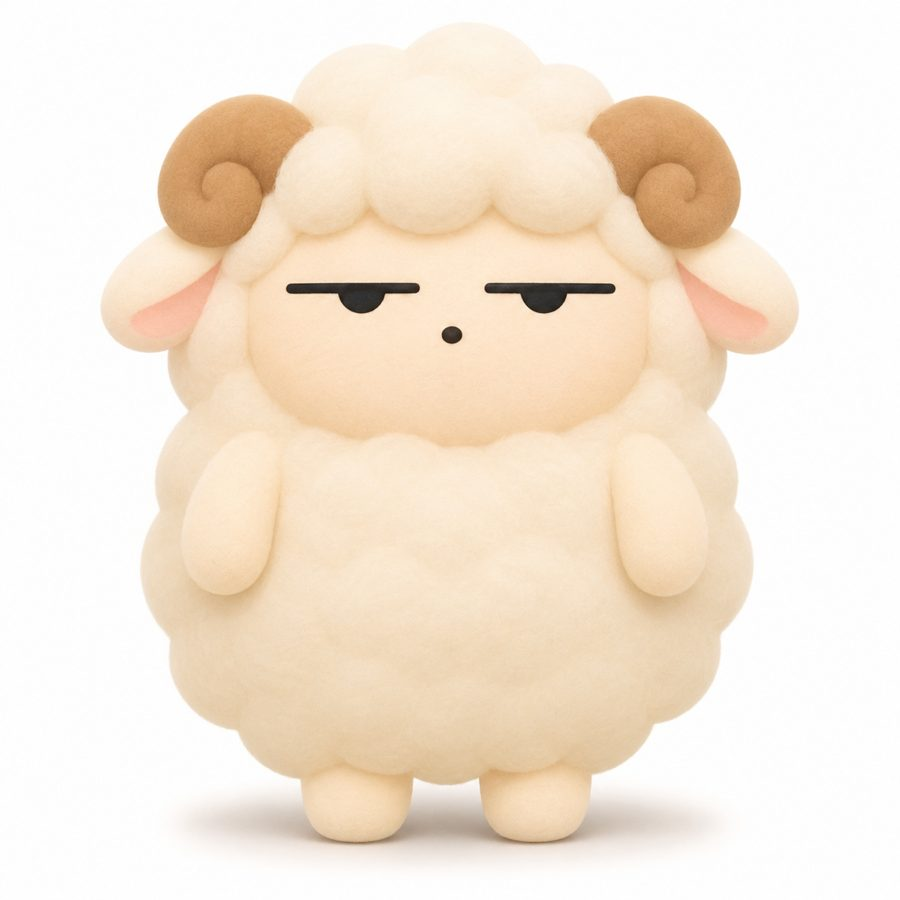
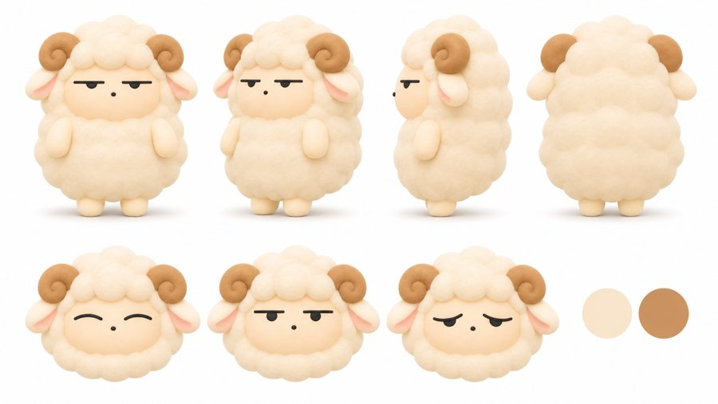
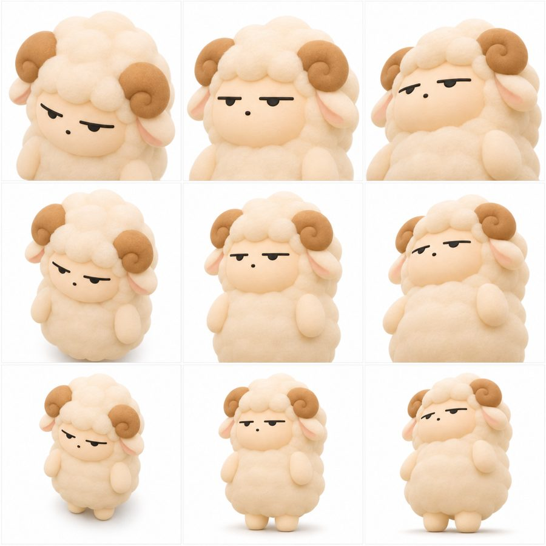
지난 시간 이어 붙이기 — 프로젝트에 재료 넣기
지난 시간 마지막에 만든 프로젝트(내 캐릭터 전용 작업 폴더)에 기준 그림 세 장을 넣는 데서 시작합니다. 지난 시간에 못 한 부분이라 여기서 합니다.
왜 프로젝트에 넣어야 하나요?
- 매번 @로 부르지 않아도 됩니다. 소스(프로젝트 안 자료)에 들어간 그림은 그 프로젝트 안의 모든 채팅이 참고합니다.
- 기록이 한곳에 쌓입니다. 일반 채팅은 나중에 찾기 힘들고 검색도 잘 안 될 때가 있습니다.
- 지침(프로젝트 규칙)이 매번 적용되어 캐릭터 설명을 다시 안 해도 됩니다.
지난 시간 정리: 저장과 호출
참고 이미지 저장은 단일 캐릭터 그림만 됩니다. 캐릭터 시트·표정 시트처럼 여러 모습이 한 장에 있는 그림은 채팅에서 "저장해 줘"라고 하면 거절됩니다. 그럴 땐 아래처럼 직접 넣었습니다.
- 그림 위 →
- 왼쪽 → → → 파일 올리기
- 종류에서 를 누르면 이름 칸이 나옵니다 → 이름(예: 귀찮냥 표정 시트) →
- 새 채팅에서 @를 누르고 이름 앞 글자만 쳐도 불러와집니다.
① 기준 그림 세 장을 프로젝트 소스에 넣기
- 왼쪽 에서 앵커·캐릭터 시트·표정 시트를 하나씩 열고 (원본)
- 왼쪽 에서 내 작업실(예: 귀찮냥 작업실)을 누릅니다.
- 프로젝트 화면의 탭 → → 세 파일을 올립니다.
- 친구 캐릭터가 있으면 그 앵커·시트도 같이 올립니다.
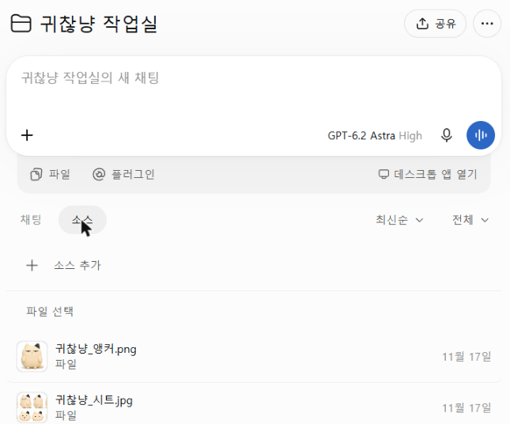
② 지침 확인하기 (없으면 넣기)
지난 시간 만든 지침이 있으면 그대로 둡니다. 없는 분은 프로젝트 오른쪽 위 → → 에 아래를 붙여 넣고 저장합니다.
이 프로젝트는 내 캐릭터 {N}의 작업실이다.
- 캐릭터: (생김새·성격을 두 줄로 적기. 예: 만사가 귀찮고 아무 생각이 없는 찹쌀떡 몸의 고양이)
- 규칙 1: 항상 소스의 앵커·캐릭터 시트를 참고해 생김새, 색, 화풍을 유지한다.
- 규칙 2: 내가 따로 말하지 않으면 손에 물건을 쥐지 않는다.
- 규칙 3: 그림 안에 글자를 넣지 않는다.
- 규칙 4: 그림 아래에 어떤 샷·앵글·조명을 썼는지 한 줄로 적는다.
- 친구 캐릭터 {Y}가 함께 나오면 두 캐릭터의 생김새를 각자 기준 그대로 지키고, 같은 장면에서 역할(시선·자세)을 나눈다.③ 제대로 들어갔는지 확인
프로젝트 안에서 새 채팅을 열고(@ 없이) 보냅니다. 같은 캐릭터가 나오면 성공입니다.
소스의 {N}가 햇빛 드는 창가에 기대어 밖을 보는 장면을 한 장. 반측면, 미디엄 샷, 눈높이, 창문으로 들어오는 따뜻한 자연광. 정사각형.- 다른 캐릭터가 나온다 → 소스 탭에 파일이 보이는지 확인 → 그래도 다르면 요청 앞에 @{N}를 붙여 보냅니다.
- 소스 추가 버튼이 없다 → 프로젝트 안이 아니라 일반 채팅에 있는 것입니다. 왼쪽 프로젝트 이름을 먼저 누르세요.
굿즈용 포즈 뽑기
굿즈는 "예쁜 그림"보다 "칸에 잘 들어가는 실루엣"(겉모양 윤곽)이 중요합니다. 3×3 그리드(바둑판 9칸)로 한 번에 여러 포즈를 뽑아 놓고 고릅니다.
굿즈에 좋은 포즈 고르는 기준
- 실루엣이 단순할 것 — 스티커 칼선(오리는 선)이 깔끔해집니다.
- 머리부터 발끝까지 잘리지 않을 것 — 귀·뿔·꼬리·모자처럼 몸 밖으로 튀어나온 부분이 있다면 그것까지. 잘리면 인쇄할 때 고칠 수 없습니다.
- 정면이나 반측면일 것 — 뒷모습은 캐릭터인지 알아보기 어렵습니다.
| 굿즈 | 잘 맞는 포즈 |
|---|---|
| 스티커 | 표정이 크게 보이는 상반신·얼굴 |
| 키링 | 작고 동그랗게 뭉친 전신, 점프 |
| 머그(돌려 보는 영상) | 옆으로 길게 눕기 — 가로로 긴 칸 |
| 티셔츠·에코백 | 단독으로 크게, 손 흔들기·인사 |
실제로 돌려 본 결과
✔ 9칸 모두 같은 캐릭터, 번호도 지시대로 작게 들어갔습니다.
✘ ⑦ 뒤돌아보기는 거의 정면처럼 나왔습니다. → 아래 확장 프롬프트로 그 칸만 다시 뽑습니다.
① 3×3 포즈 뽑기
프로젝트 안 새 채팅에 그대로 붙여 넣습니다.
소스의 {N}(앵커·캐릭터 시트)로 굿즈용 포즈 9개를 3×3 그리드 한 장(정사각형)으로 그려 줘. 흰 배경, 칸마다 같은 크기, 머리부터 발끝까지(튀어나온 부분 포함) 칸 안에 다 들어오게. 소스에 없는 귀·꼬리·장식은 새로 붙이지 마.
포즈: ① 정면 앉기 ② 한 손 흔들기 ③ 엎드려 졸기 ④ 기지개 ⑤ 점프 ⑥ 옆으로 길게 눕기 ⑦ 뒤돌아보기 ⑧ 얼굴 클로즈업 ⑨ 두 손 모아 인사.
생김새·색·질감은 소스 그대로. (이번 요청은 지침 예외: 칸 왼쪽 위에 작은 번호만 허용)⑦번 칸만 다시 그려 줘. 등이 화면을 향하고 고개만 살짝 돌려 어깨 너머로 보는 모습. 나머지 8칸은 그대로 두고, 같은 3×3 한 장으로.
같은 방법으로 소스의 {Y}도 굿즈용 포즈 9칸(3×3, 흰 배경, 정사각형)을 그려 줘. 포즈 번호와 순서는 위와 같게, 생김새·색·질감은 {Y} 기준 그대로.- 칸마다 캐릭터가 조금씩 다르다 → "9칸 모두 같은 캐릭터, 얼굴 생김새·색·몸 비율을 소스와 똑같이, 소스에 없는 부분은 더하지 마"를 덧붙여 다시.
- 칸 크기가 제각각 → "칸 사이에 얇은 흰 선, 칸 크기 모두 같게".
- 번호 대신 긴 글자가 들어간다 → "번호 숫자 하나만, 다른 글자 없음".
목업 칸에 맞는 그림 만들기 — 비율과 화풍
지난 시간 8초 머그 영상에 캐릭터를 넣었더니 얼굴이 사라졌죠? 그 이유는 그림 칸의 모양이 달랐기 때문입니다. 캔바는 목업마다 "최적 크기"를 알려 줍니다. 그 비율대로 그림을 만들면 잘리지 않습니다.
캔바 목업스가 알려 주는 "최적 크기" (직접 확인한 값)
목업을 하나 누르면 왼쪽에 "이미지를 목업 템플릿으로 끌어다 놓으면 됩니다 · 최적 크기: ○○ × ○○ px 또는 이와 동일한 비율"이라고 나옵니다. 숫자보다 비율이 중요합니다.
| 목업 (캔바 목업스) | 최적 크기 | 그림 비율로 만들기 | 그림 만들 때 주의 |
|---|---|---|---|
| 머그컵 (사진, 홈 & 리빙) | 1235 × 1181 | 정사각형 1:1 | 캐릭터를 가운데, 위아래 여백 |
| 머그컵 8초 영상 | 1920 × 884 | 가로 2:1 | 컵이 돌아가며 보이므로 양 끝은 배경만 |
| 쿠션 | 2000 × 2000 | 정사각형 1:1 | 가장자리가 접혀 보임 → 캐릭터는 안쪽 80% 안에 |
| 에코백 8초 영상 | 1920 × 1920 | 정사각형 1:1 | 선 그림·단색이 잘 어울림 |
| 종이컵 | 1535 × 1581 | 거의 1:1 | 컵 곡면 때문에 가운데만 또렷함 |
| 원형 스티커 (인쇄) | 1000 × 1000 | 1:1, 원으로 잘림 | 네 모서리는 잘리니 캐릭터를 원 안에 |
| 흰 티셔츠 (의상) | 1344 × 1728 | 세로 3:4 | 배경 투명 PNG면 옷 색이 그대로 보임 |
| 스마트폰 (카드뉴스 확인용) | 1320 × 2868 | 9:16 카드 넣으면 위아래 조금 잘림 | STEP 10에서 사용 |
| 키링 | 캔바 목업스에 없음 → 챗GPT로 "실물 사진 목업"을 바로 만듭니다(아래 실행 ④). | ||
2026년 11월 24일 캔바 목업스 앱에서 각 목업을 직접 눌러 확인한 값입니다. 목업마다 다르니, 다른 목업을 쓸 땐 왼쪽에 뜨는 최적 크기를 꼭 확인하세요.
캔바에서 본 칸 모양
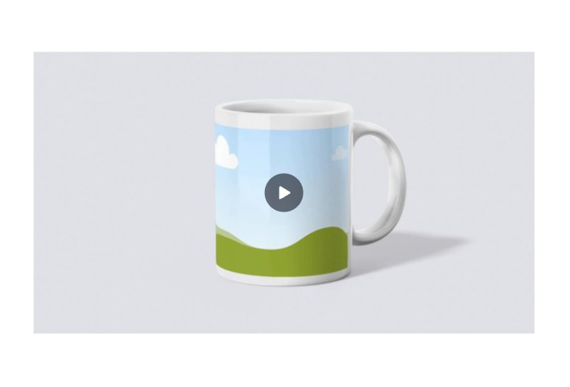
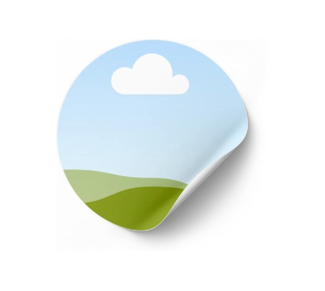
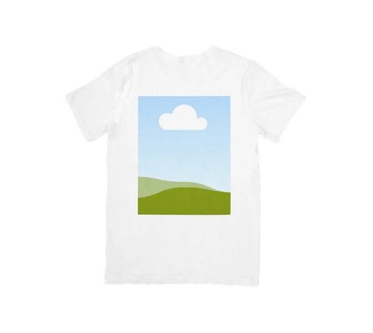
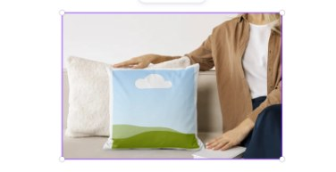
하늘과 풀밭 그림이 들어간 자리가 내 그림이 들어갈 칸입니다.
제품에 따라 화풍 바꾸기
캐릭터의 선과 생김새만 지키면, 화풍(그림 느낌)은 제품에 맞게 바꿔도 됩니다.
| 제품 | 어울리는 화풍 |
|---|---|
| 머그·쿠션 | 지금의 매트 클레이(점토) 그대로 |
| 티셔츠 | 배경 없는 투명 PNG, 그림자 없이 |
| 에코백 | 검은 선 한 가지 색의 단순한 선 그림(1도 인쇄) |
| 스티커 | 흰 테두리 다이컷(모양대로 오리기), 변칙으로 8비트 픽셀 |
| 아크릴 키링 | 두꺼운 흰 테두리 + 투명 아크릴 광택 |
① 머그 8초 영상용 — 가로 2:1 (두 캐릭터)
캔바 8초 머그컵 영상 목업에 넣을 가로 2:1 그림 한 장을 만들어 줘. 컵을 돌리면 이야기가 이어지도록: 왼쪽에는 {N}가 옆으로 길게 누워 있고, 오른쪽에는 {Y}가 앉아서 {N} 쪽을 겨우 쳐다본다. 두 캐릭터 사이는 조금 떨어뜨리고 양쪽 끝 15%는 배경만. 배경은 연한 크림색 단색, 두 캐릭터 생김새·색·질감은 각자 기준 그대로, 글자 없음.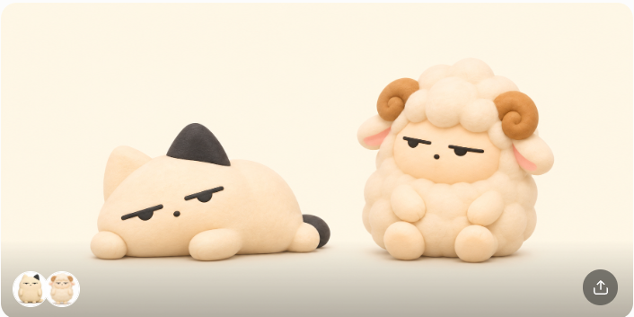
위 9칸 그림에서 ⑥번(옆으로 길게 눕기) 포즈만 골라, 캔바 8초 머그컵 영상 목업에 넣을 가로로 긴 그림 한 장을 만들어 줘. 비율은 가로 2 : 세로 1. 배경은 연한 하늘색 단색, {N}는 가운데에 그림 높이의 60% 크기로, 좌우는 배경만 넓게 비워 줘(컵이 돌아갈 때 보이는 부분). 글자 없음.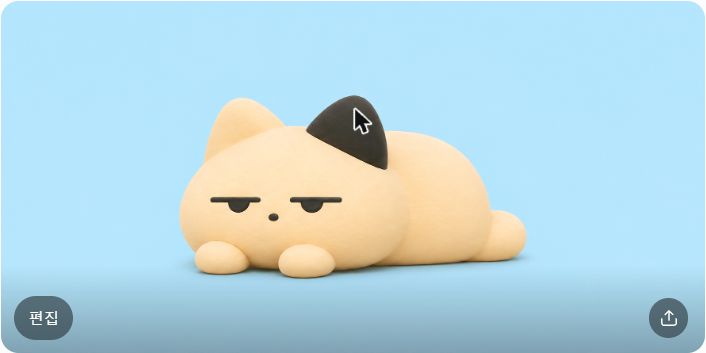
② 티셔츠용 — 세로 3:4 투명 배경
위 9칸 그림의 ②번(한 손 흔들기) 포즈로 티셔츠 가슴 인쇄용 그림 한 장을 만들어 줘. 세로 3:4, 배경은 투명(투명 PNG), {N}만 가운데에 크게, 바닥 그림자·소품 없이. 생김새·색·질감은 소스 그대로, 글자 없음.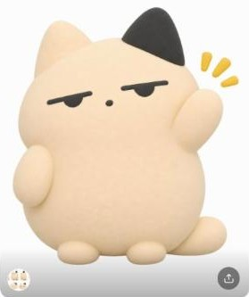
③ 스티커용 — 원형 1:1 / 에코백용 — 선 그림
위 9칸 그림의 ⑧번(얼굴 클로즈업)으로 원형 스티커용 그림 한 장. 정사각형 1:1, 연한 민트색 원형 배경이 그림 가득, {N} 얼굴은 원 안쪽 70% 안에 들어오게(네 모서리는 잘림). 생김새·색은 소스 그대로, 글자 없음.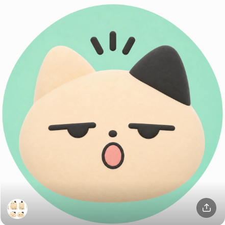
이번에는 같은 {N}를 에코백에 인쇄할 검은 선 한 가지 색의 단순한 선 그림(라인 드로잉)으로 바꿔 줘. ①번(정면 앉기) 포즈, 정사각형, 흰 배경, 색 채우기 없이 선만, 선 굵기 일정하게. 생김새의 선은 소스 그대로.- 비율이 다르게 나온다 → 첫 문장에 비율을 다시 적기: "가로 2:1(가로가 세로의 두 배)".
- 선 그림에 색이 들어간다 → "회색 그림자·음영도 없이 검은 선만".
④ 캔바에 없는 굿즈 — 키링 실물 목업을 챗GPT로
⑤번(점프) 포즈로 아크릴 키링 실물 사진 목업 한 장을 만들어 줘. 투명 아크릴 판에 {N}가 인쇄되고 바깥에 두꺼운 흰 테두리(칼선)가 있으며, 위쪽 구멍에 은색 금속 고리. 밝은 나무 책상 위, 부드러운 자연광, 정사각형. {N} 생김새·색은 소스 그대로, 글자 없음.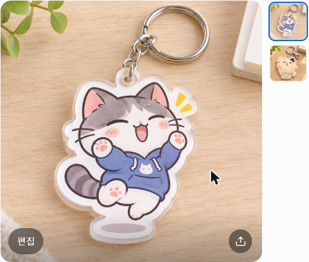
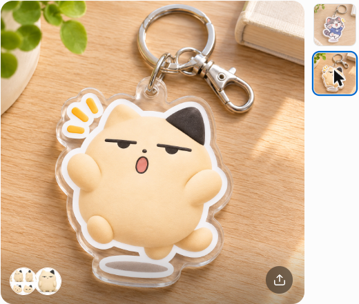
캔바 목업스로 굿즈 완성하기
목업(Mockup)은 "내 그림이 실제 제품에 들어가면 이렇게 보인다"를 미리 보여 주는 합성 사진입니다. 캔바의 목업스 앱은 무료이고, 일부는 움직이는 영상으로도 나옵니다.
목업스 화면 구성
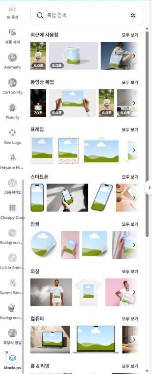
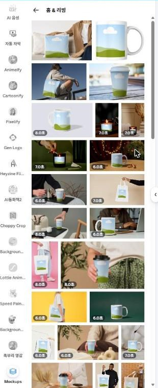
목업에 넣는 두 가지 방법
어느 쪽이든 마지막엔 더블클릭 → 맞춤으로 얼굴이 칸 안에 오게 맞춥니다.
① 머그 영상·쿠션·티셔츠 목업 만들기
- STEP 3에서 만든 그림들을 챗GPT에서 합니다(머그 2:1, 티셔츠 3:4, 정사각형 하나).
- 캔바에서 을 만듭니다.
- 왼쪽 → 아래로 내려 를 누릅니다.
- → 머그컵 8초를 누릅니다. 왼쪽에 최적 크기 1920×884가 뜨는지 확인하세요.
- 왼쪽 → → 머그용 2:1 그림을 올립니다.
- 올린 그림을 머그 위로 끌어다 놓습니다. 잘려 보이면 더블클릭 → 맞춤 → .
- 같은 방법으로 쿠션(정사각형 그림)과 의 흰 티셔츠(3:4 투명 그림)도 만듭니다.
- 오른쪽 위 으로 재생하면 영상 목업이 움직이는 걸 볼 수 있습니다. 저장은 에서 영상은 MP4, 사진은 PNG.
- 앱 목록에 Mockups가 안 보인다 → 앱 검색창에 Mockups를 칩니다.
- 얼굴이 사라졌다 → 그림 비율이 칸과 다른 것입니다. 더블클릭 → 맞춤, 그래도 안 되면 STEP 3 표의 비율로 다시 만듭니다.
- 티셔츠에 흰 네모가 보인다 → 투명 PNG가 아닙니다. "배경 투명 PNG로 다시"를 보냅니다.
- 의 원형 스티커, 의 쇼핑백도 같은 방법으로 해 보세요.
- 목업 세 장을 한 페이지에 모으면 "내 굿즈 라인업" 소개 이미지가 됩니다. 8차시 상품 등록 때 대표 이미지로 씁니다.
카드뉴스는 "질문 한 문장"에서 시작한다
카드뉴스는 가게 홍보만 있는 게 아닙니다. 유튜브 영상이나 기사를 내 캐릭터가 대신 설명해 주는 정보 카드로 만들면, 매주 새 소식으로 꾸준히 올릴 수 있습니다.
카드뉴스 만드는 5단계
① 질문 한 문장이 왜 먼저일까?
"이 카드를 본 사람이 무엇을 이해하거나 결정할 수 있어야 하나?"를 먼저 정해야 표지 문구와 마지막 장이 이어집니다.
| 흐린 질문 ✘ | 또렷한 질문 ✔ |
|---|---|
| 릴리스AI 소식 | 요약해 주던 릴리스AI가 리드레이로 바뀌었다는데, 무엇이 달라졌을까? |
| 새 AI가 더 좋다 | 같은 작업에서 답을 더 빨리 받았나? 그 답도 정확했나? |
같은 자료, 두 가지 읽는 속도
| 세로 9:16 요약판 | 정사각 1:1 심화판 | |
|---|---|---|
| 어디에 | 카톡방·인스타 스토리·릴스 | 인스타 피드·유튜브 게시판·블로그 |
| 장수 | 단순하면 3장, 보통 5장 | 5~8장, 많으면 10장 |
| 첫 장 | 무엇을 할 수 있는지 한 문장 + 결과 장면 | 같은 질문 + 근거·비교 범위 예고 |
| 중간 | 결과 → 따라 할 한 단계 → 조건·주의 | 입력과 결과 → 실제 화면 → 비교 기준 → 한계 |
| 마지막 | 오늘 해 볼 행동 | 확인한 결론 + 다시 찾을 출처 |
몇 장으로 만들까?
- 질문 하나, 행동이 단순 → 후킹(눈길 끌기) → 핵심 근거 → 행동의 3장
- 헷갈리기 쉬운 조건(무료 범위, 권한 등)이 있으면 조건 하나당 한 장
- 여러 강의·상품을 소개할 땐 빠진 것부터 찾고 주제별로 묶기
완성 예시 — 이렇게까지 만들어 봅니다
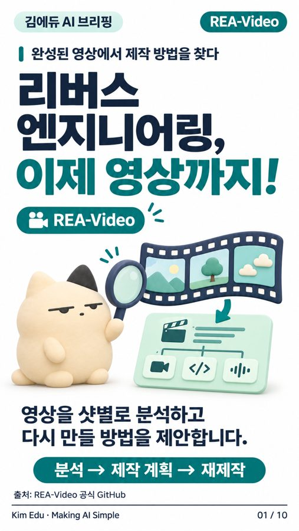
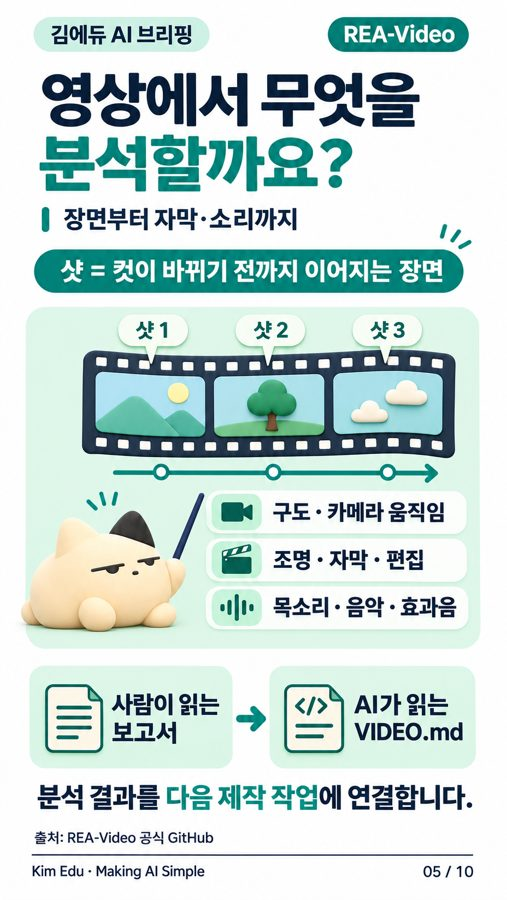
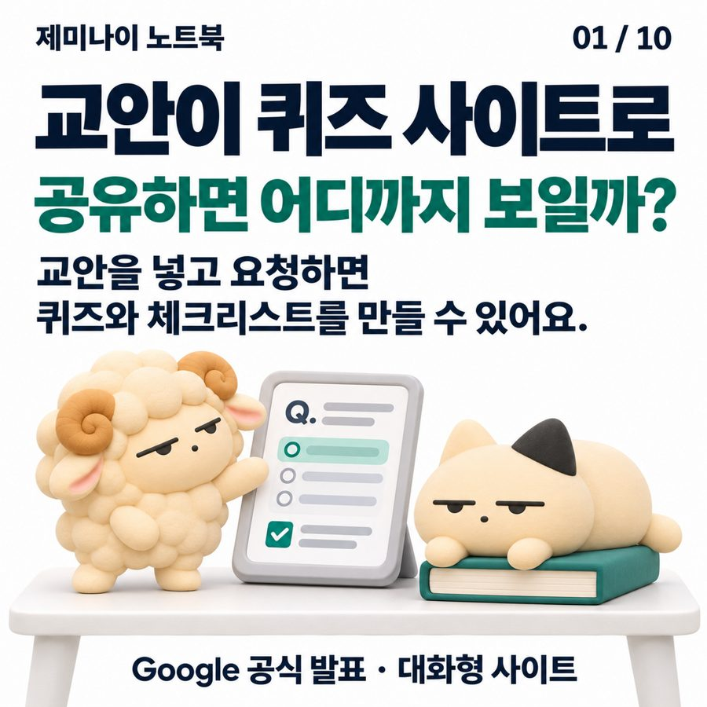
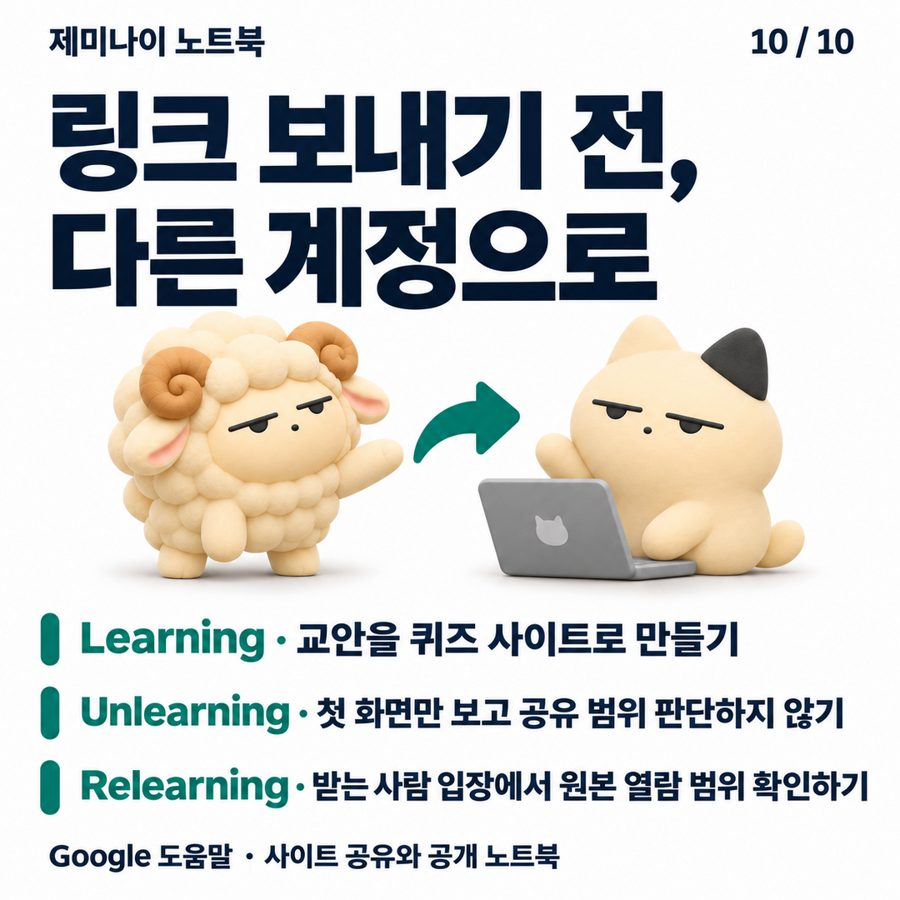
① 내 카드뉴스 질문 정하기
아래 빈칸을 채워 메모장에 적어 두세요. 다음 STEP에서 자료를 모은 뒤 기획 프롬프트에 그대로 넣습니다.
독자: (예: AI 도구를 막 쓰기 시작한 50~60대 / 우리 가게 단골 / 같은 취미 모임)
게시처: (예: 카톡방 → 9:16 / 인스타 피드 → 1:1)
독자가 오늘 궁금해할 질문: (예: ○○가 바뀌었다는데 나는 뭘 하면 될까?)
내 캐릭터 역할: {N}는 (예: 귀찮아하며 궁금해하는 쪽), {Y}는 (예: 짚어 주고 확인해 주는 쪽)자료 모으기 — 유튜브 영상과 기사
정보 카드뉴스의 힘은 근거입니다. "어디에 그렇게 나왔는지"를 붙여 두면, 카드에 쓸 말과 쓰면 안 되는 말이 저절로 갈립니다.
유튜브 영상 내용 가져오는 방법
| 방법 | 특징 |
|---|---|
| ① 유튜브 스크립트 복사 → 챗GPT 가장 확실 · 무료 | 영상 아래 → → 오른쪽에 뜬 글을 전부 끌어 복사 → 챗GPT에 붙여 넣기. 실제로 한 말이 근거가 됩니다. |
| ② 라이브위키 (livewiki.com) | 유튜브·PDF 요약 도구. 크롬 확장 프로그램을 깔면 영상 옆 Summarize Video 버튼으로 핵심 요약·아티클·타임라인을 보여 줍니다. 저장하려면 로그인. |
| ③ 리드레이 (구 릴리스AI) | 2026년 10월 26일 릴리스AI에서 리드레이(Readray)로 이름이 바뀌었습니다. 영상·PDF·웹 요약과 질문하기. 이름이 바뀌면서 크레딧(사용량) 방식 요금제가 함께 안내되었으니, 무료로 어디까지 되는지는 쓰기 전에 확인하세요. |
| ④ 챗GPT에 링크만 넣기 비추천 | 아래 시험처럼 영상을 열지 못하는 경우가 있습니다. |
직접 시험: 링크만 넣으면?
챗GPT에 유튜브 주소만 주고 "실제로 확인했는지 솔직하게 밝혀 줘"라고 했더니 이렇게 답했습니다.
그래서 오늘은 방법 ①(스크립트 복사)을 기본으로 합니다. 질문 끝에 "확인했는지 밝혀 줘"를 붙이는 습관도 들여 두세요. 지어낸 요약을 걸러 줍니다.
기사 모으기 — 챗GPT 검색
챗GPT는 웹 검색으로 기사를 찾아 매체·날짜·링크를 붙여 줍니다. 여러 기사를 비교시키면 기사마다 다른 숫자까지 찾아냅니다.
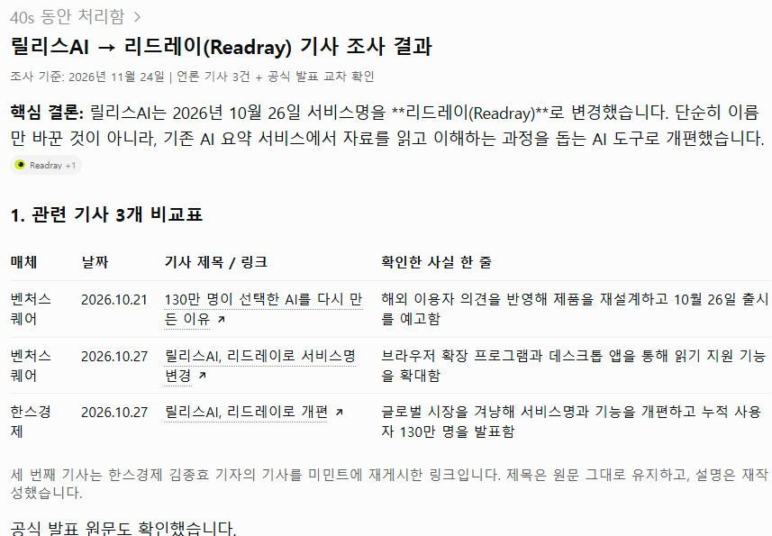
근거마다 쓸 수 있는 말이 다르다
| 근거 | 카드에 쓸 수 있는 표현 |
|---|---|
| 공식 공지·도움말 | "공지는 ○○부터 제공한다고 안내합니다." |
| 기사 | "○○신문(날짜)에 따르면…" |
| 영상·자막 | "시연에서는 이 입력 뒤에 이 결과가 나왔습니다." |
| 내 캡처·실습 | "제 계정에서 이렇게 열어 보니 보였습니다." |
| 후기·커뮤니티 | "이 사용자는 이 작업에서 더 빨랐다고 했습니다." |
| 확인 못 함 | "무료로 하루 몇 번인지는 확인하지 못했습니다." — 숫자를 지어내지 않기 |
크롤링 — 챗GPT에게 "모아서 표로" 시키기
크롤링(웹에서 정보를 자동으로 모아 오는 것)은 이제 프로그램을 짜지 않아도 됩니다. 챗GPT에 주제·기간·개수·표 칸을 말하면 웹을 검색해 기사 목록을 표로 만들고, 엑셀에서 여는 CSV 파일까지 만들어 줍니다.
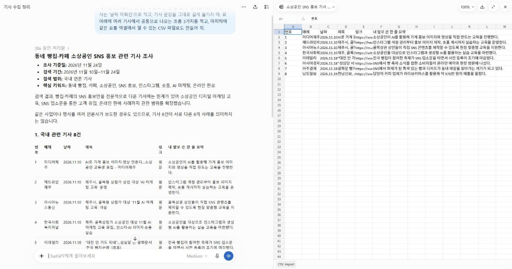
Chat과 Work — 같은 일을 시켜 보면
챗GPT 화면 맨 위의 | 스위치로 고릅니다. 공식 안내 기준으로 Chat은 질문·설명·아이디어·짧은 초안, Work는 여러 단계를 거쳐 완성 결과물(문서·표·발표 자료·보고서 등)을 만드는 일에 씁니다. 프로젝트 안에서도 둘 중 하나를 골라 시작할 수 있습니다.
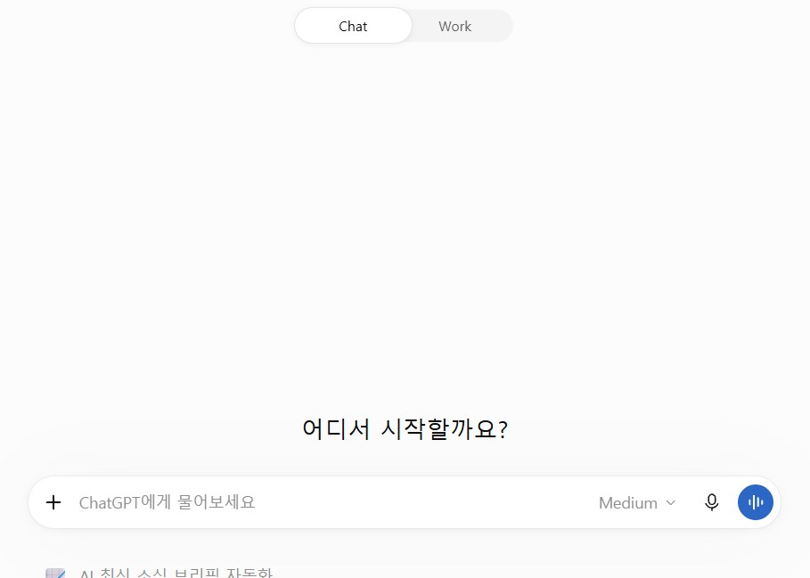
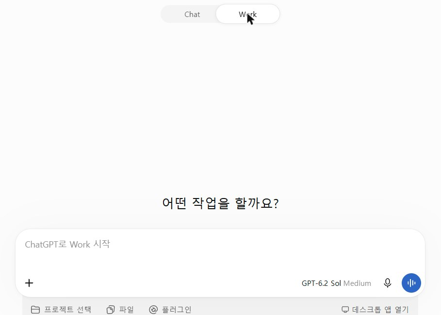
직접 시험 — 위 "기사 8개 모아 표·CSV" 프롬프트를 글자 하나 안 바꾸고 두 모드에 보냈습니다.
| Chat | Work | |
|---|---|---|
| 걸린 시간 | 약 40초 | 약 3분 (웹사이트 150여 곳 검색) |
| 고른 기사 | 8개 중 4개가 같은 행사 기사(스스로 표시함) | 빵집 신메뉴·SNS 입소문 사례 등 서로 다른 기사 8개 |
| 날짜 확인 | 모두 날짜 적음 | "8건 모두 원문에서 공개일 확인"이라고 밝힘 |
| CSV 파일 | 만들어 줌 · 오른쪽 표 미리보기 | 만들어 줌 · 오른쪽 표 미리보기 |
| 아쉬운 점 | 범위가 넓어지고 겹치는 기사 | 오래 걸림 · 답에 ** 같은 기호가 섞여 나옴 |
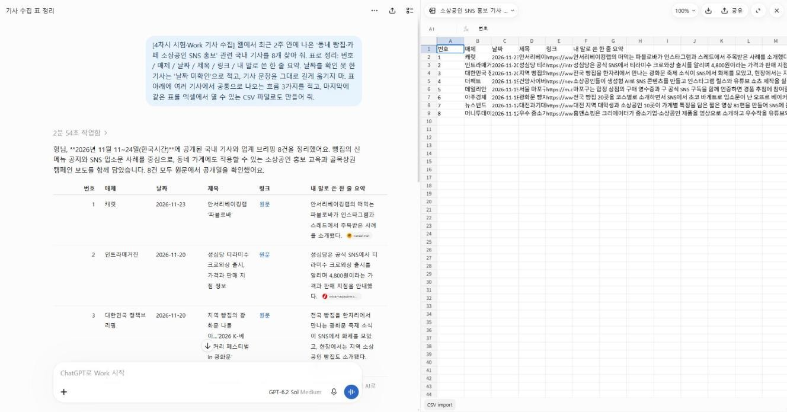
저작권 — 남의 기사·영상으로 카드뉴스 만들 때
자료를 모으는 것과 카드에 옮기는 것은 다릅니다. 수업·개인 공부로 모아 보는 건 괜찮지만, 카드뉴스로 올리는 순간 아래를 지켜야 합니다.
| 해도 되는 것 ✔ | 하면 안 되는 것 ✘ |
|---|---|
| 내 말로 짧게 요약 + 출처(매체·날짜) 표시 | 기사 문단·영상 대사를 통째로 옮기기 |
| 사실(날짜·이름·숫자)을 확인해 쓰기 | 기사 사진·인물 사진·캡처를 그대로 넣기 |
| 브랜드 색 분위기만 참고하기 | 남의 로고·캐릭터·상표를 그려 넣기 |
| 핵심 한 문장만 따옴표로 짧게 인용 | 남의 카드뉴스 디자인을 그대로 베끼기 |
① 기사로 할 때
프로젝트 안 새 채팅에서 보냅니다. 따옴표 안만 내 주제로 바꾸세요.
웹에서 '릴리스AI가 리드레이(Readray)로 이름을 바꾼 소식' 기사를 2~3개 찾아 줘. 표로 정리: 매체 / 날짜 / 제목 / 링크 / 확인한 사실 한 줄. 그다음 여러 기사에서 공통으로 확인되는 사실 3가지와, 기사마다 다르게 말하는 부분이 있으면 따로 적어 줘. 기사 문장을 그대로 길게 옮기지 말고 내 말로 요약해 줘.
위 기사들의 내용을 그 회사의 공식 발표·공지와 대조해 줘. 공식 발표에 있는 것 / 기사에만 있는 것 / 어디에도 확인 안 되는 것으로 나눠 표로.
② 여러 기사 한 번에 모으기 (크롤링)
프로젝트 밖 일반 새 채팅, 입력창 위 상태에서 보냅니다. 작은따옴표 안 주제만 바꾸세요.
웹에서 최근 2주 안에 나온 '동네 빵집·카페 소상공인 SNS 홍보' 관련 국내 기사를 8개 찾아 줘. 표로 정리: 번호 / 매체 / 날짜 / 제목 / 링크 / 내 말로 쓴 한 줄 요약. 날짜를 확인 못 한 기사는 '날짜 미확인'으로 적고, 기사 문장을 그대로 길게 옮기지 마. 표 아래에 여러 기사에서 공통으로 나오는 흐름 3가지를 적고, 마지막에 같은 표를 엑셀에서 열 수 있는 CSV 파일로도 만들어 줘.
(맨 위 스위치를 Work로 바꾼 뒤) 위와 같은 프롬프트를 그대로 보내 보세요. Chat 결과와 나란히 놓고 ① 걸린 시간 ② 겹치는 기사 수 ③ 날짜를 원문에서 확인했는지를 비교해 적어 봅니다.
위 표에서 같은 사건·행사를 다룬 기사끼리 묶어 줘. 묶음마다 가장 먼저 보도한 기사 1개와, 기사마다 다르게 쓴 숫자·날짜가 있으면 표시해 줘.
- CSV를 엑셀로 열었더니 글자가 깨진다 → "UTF-8 BOM으로 다시 저장해 줘"라고 한 번 더 보냅니다.
- 기사가 8개보다 적게 나온다 → 기간을 "최근 한 달"로 늘리거나 주제 낱말을 넓힙니다.
③ 유튜브 영상으로 할 때
- 영상 아래 →
- 오른쪽 스크립트 창 맨 위 글자부터 맨 아래까지 끌어 선택 → Ctrl+C
- 프로젝트 새 채팅에 아래 프롬프트를 쓰고, 그 밑에 Ctrl+V
아래는 유튜브 영상 「(영상 제목)」의 스크립트야. 영상에서 실제로 말한 내용만 근거로 정리해 줘. 1) 영상이 답하는 질문 한 문장 2) 핵심 내용 5가지 (각각 몇 분쯤 나오는지 시간 표시) 3) 숫자·이름·날짜처럼 확인이 필요한 말은 따로 표시 4) 영상에 없는 내용은 덧붙이지 마. --- (여기에 스크립트 붙여 넣기)
- 스크립트 표시 버튼이 없다 → 자막이 없는 영상입니다. 라이브위키나 리드레이로 요약하거나 다른 영상을 고르세요.
- 글이 너무 길어 안 붙는다 → 앞쪽 절반만 먼저 보내고 "이어서 더 보낼게"라고 한 뒤 나머지를 보냅니다.
출처에 어울리는 색 찾기 — 톤앤매너
톤앤매너(전체 분위기와 말투·색의 통일감)를 맞추려면 색부터 정합니다. 다루는 서비스나 기사의 대표 색을 뽑아 오면, 카드만 봐도 "무슨 이야기인지" 느낌이 옵니다.
색 찾는 순서
색 역할 4가지
| 역할 | 예시 |
|---|---|
| 바탕 | 흰색 #FFFFFF (글자가 잘 읽힘) |
| 제목 | 가장 진한 색 (예: 짙은 청록 #124F5E) |
| 강조 라벨 | 연한 색 (예: #DAE4D7) 위에 진한 글자 |
| 주의 | 코랄·주황 계열은 "조심" 표시에만 |
어도비 컬러로 색 뽑기 (로그인 없이)
주소: color.adobe.com/ko/create/image → → 사진·카드를 고르면 색 5개와 HEX가 바로 나옵니다. 로그인은 팔레트를 저장할 때만 필요하고, HEX를 보고 적는 데는 필요 없습니다.
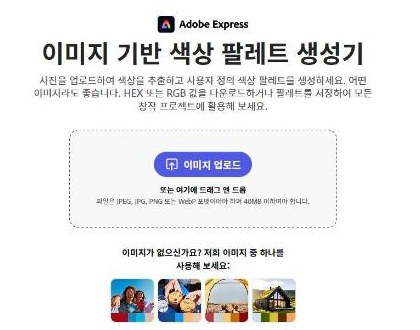
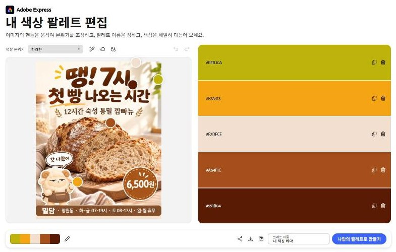
- 왼쪽 위 (화려한·밝은·차분한 등)를 바꾸면 같은 사진에서 다른 느낌의 5색을 다시 뽑아 줍니다.
- 색 칸 옆 복사 아이콘을 누르면 HEX가 복사됩니다 → 프롬프트의 "대표 색" 칸에 붙여 넣기.
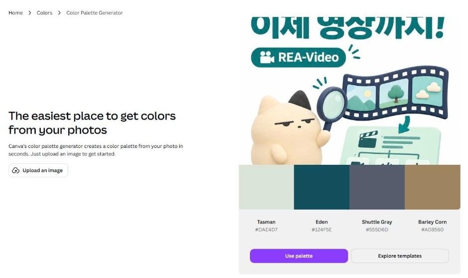
주제에 따라 어울리는 색 느낌
| 주제 | 색 느낌 |
|---|---|
| AI·IT 소식 | 청록·네이비 + 흰 바탕 (차분, 믿음) |
| 경제·금융 | 네이비·남색 (신뢰) |
| 음식·가게 | 크림·주황·갈색 (따뜻함) |
| 건강·생활 | 연두·민트 (산뜻함) |
| 주의·경고 | 코랄 한 곳에만 (전체에 쓰면 불안해 보임) |
① 내 카드뉴스 색 두 개 정하기
- 다루는 서비스의 홈페이지나 기사 대표 화면을 캡처합니다(Win+Shift+S → 바탕화면에 저장).
- 어도비 컬러(color.adobe.com/ko/create/image)에 올려 HEX를 확인합니다. 안 열리면 캔바 색상 팔레트 생성기를 씁니다.
- 제목색(가장 진한 색)과 라벨색(가장 연한 색) 두 개를 골라 메모합니다.
첨부한 화면에서 대표 색 4개를 HEX로 뽑고, 흰 바탕 카드뉴스에 쓸 때 제목색·강조 라벨색·주의색으로 각각 무엇이 좋을지 골라 줘. 글자와 바탕의 대비가 약한 조합은 빼 줘.
기획표 만들고, 한 장씩 생성하기 — 9:16과 1:1
가장 많이 실패하는 이유는 여러 장을 한 번에 시키는 것입니다. 합본(여러 장이 한 그림에 붙어 나옴)이 생기거나 2장에 표지가 또 나옵니다. 기획은 표로 한 번에, 그림은 한 장씩 만듭니다.
9:16과 1:1 배치
실제로 만든 결과
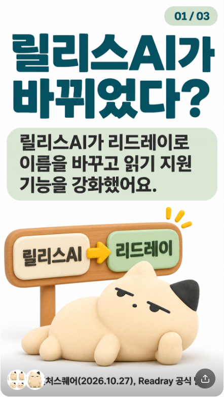
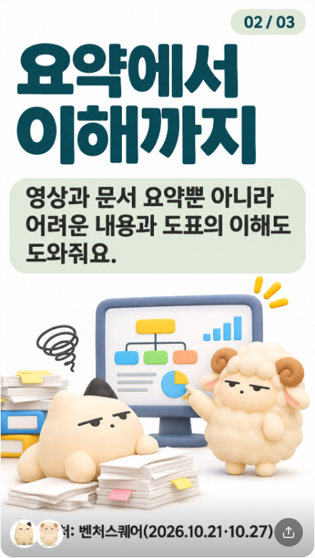
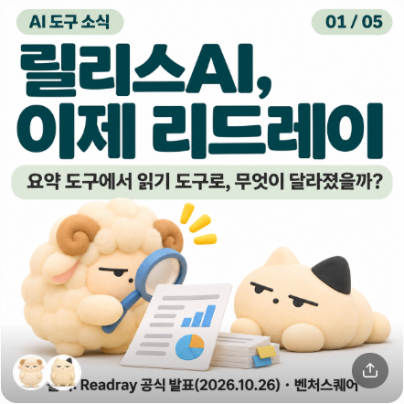
✔ 한글 제목·본문·번호가 지시대로 정확히 나왔고, 2장도 1장과 같은 색·글자 크기를 지켰습니다.
✘ 하단 출처 줄 앞부분이 화면의 작은 버튼에 가려 보였습니다. 반드시 내려받은 원본에서 출처가 잘리지 않았는지 확인합니다(STEP 9).
두 캐릭터가 함께 나올 때
- 같은 장에서 역할을 나눕니다: 한쪽은 궁금해하거나 관찰하고, 다른 쪽은 짚어 주거나 확인합니다.
- 장마다 포즈와 장면을 바꿉니다. 같은 포즈가 반복되면 넘길 이유가 사라집니다.
- 친구 캐릭터가 소스에 없으면 그 장을 만들 때 앵커를 첨부하고 "첨부한 그림은 {Y}야"를 붙입니다.
① 기획표 만들기 (그림은 아직 그리지 않기)
STEP 6에서 자료를 모은 같은 채팅에 이어서 보냅니다.
위 조사로 카드뉴스를 기획만 해 줘(아직 그림은 그리지 마). 독자: AI 도구를 막 쓰기 시작한 50~60대. 먼저 '독자가 오늘 궁금해할 질문'을 한 문장으로 정하고, 세로 9:16 요약판 3장으로 장마다 [제목(15자 이내) / 한 줄 답 / 근거(어느 기사) / {N}와 {Y}가 하는 행동과 장면 / 하단 출처]를 표로 적어 줘. 1장은 질문과 짧은 답, 마지막 장은 독자가 오늘 해 볼 행동으로 끝내. 확인 안 된 숫자는 쓰지 마.② 1장 생성 — 한 장 작업지
이제 1장만 만들어 줘. (지침 예외: 이번 카드는 글자 허용) 단독 카드 1장 / 세로 9:16(1080×1920).
제목 "릴리스AI가 바뀌었다?" / 본문 "릴리스AI가 리드레이로 이름을 바꾸고 읽기 지원 기능을 강화했어요." / 하단 출처 "출처: 벤처스퀘어(2026.10.27), Readray 공식 발표" / 오른쪽 위 "01 / 03".
장면: {N}가 옆으로 누워 '릴리스AI → 리드레이' 이름표를 바라봄.
색: 흰 배경, 제목 #124F5E, 강조 라벨 바탕 #DAE4D7. 큰 한글 고딕, 글자는 위쪽 40%, 그림은 아래. {N}는 소스 그대로.
다른 장 문구·미리보기·여러 칸은 넣지 마.따옴표 안 문구와 색 HEX만 내 기획표·내 색으로 바꿔 넣으면 됩니다.
③ 2장부터 — 같은 틀, 다른 장면
이제 2장만 만들어 줘. {N}와 {Y}가 함께 나오되 역할을 나눠 줘: {N}는 복잡한 문서 더미 앞에서 멍하니 보고, {Y}는 정리된 화면(개념도)을 앞발로 가리키며 확인해 준다. 두 캐릭터 생김새는 각자 기준 그대로. (지침 예외: 글자 허용)
단독 카드 1장 / 세로 9:16. 제목 "요약에서 이해까지" / 본문 "영상과 문서 요약뿐 아니라 어려운 내용과 도표의 이해도 도와줘요." / 하단 출처 "출처: 벤처스퀘어(2026.10.21·10.27)" / 오른쪽 위 "02 / 03".
1장과 같은 색·글자 크기·여백으로, 장면과 포즈는 다르게. 다른 장 문구·미리보기·여러 칸은 넣지 마.④ 1:1 심화판 표지
이번에는 게시판용 1:1 심화판 표지 1장만 만들어 줘. (지침 예외: 글자 허용) 단독 카드 1장 / 정사각형 1:1(1080×1080).
왼쪽 위 작은 글자 "AI 도구 소식" / 오른쪽 위 "01 / 05" / 제목 "릴리스AI, 이제 리드레이" / 부제 "요약 도구에서 읽기 도구로, 무엇이 달라졌을까?" / 하단 "출처: Readray 공식 발표(2026.10.26) · 벤처스퀘어".
장면: {Y}가 돋보기를 들고 문서를 비춰 보고, {N}는 옆에 엎드려 그걸 구경한다.
9:16 카드와 같은 색(제목 #124F5E, 라벨 #DAE4D7)과 글자 위계, 단 정사각형에 맞게 글자는 위 절반, 그림은 아래 절반. 다른 장 문구·여러 칸은 넣지 마.- 2장이 또 표지처럼 나온다 → 요청에서 표지 문구를 빼고 "이번 장의 제목·본문·장면만"으로 다시.
- 한 그림에 여러 카드가 붙어 나온다 → "단독 카드 1장, 여러 칸 금지"를 맨 앞에 적고 그 장만 다시.
- 한글이 깨지거나 한 글자가 틀린다 → 본문을 더 짧게 줄여 그 장만 다시. 그래도 안 되면 글자 없는 그림만 받아 캔바에서 글자를 얹습니다.
- 친구 캐릭터 생김새가 바뀐다 → 그 장을 만들 때 친구 앵커를 다시 첨부.
방금 만든 9:16 1장을 같은 문구·같은 색으로 1:1 정사각형 한 장으로 다시 배치해 줘. 글자는 위 절반, 캐릭터 장면은 아래 절반, 장면 속 포즈는 새로.
가게 홍보 카드 — 캐릭터 활용형과 실사 SNS형
빵집·공방·커피숍 같은 가게 홍보 카드는 정보 카드와 다릅니다. 가게 정보가 틀리면 안 되고, 실제 SNS에서 많이 쓰는 모양을 따라야 손님이 익숙하게 읽습니다. 같은 가게로 두 가지 모양을 만들어 비교합니다.
두 갈래 — 언제 무엇을 쓸까?
가게 홍보에서 자주 망가지는 다섯 가지
| 이렇게 시키면 | 이렇게 나온다 | 막는 칸 |
|---|---|---|
| 분위기를 안 줌 | 빵집인데 남색·회색처럼 엉뚱한 색 | 분위기 + 대표 색 HEX |
| 가게 정보를 안 줌 | 영업시간·가격·이벤트를 지어냄 | 정보 칸 + "없는 건 지어내지 마" |
| "우리 가게가 더 좋다" | 비교 대상 없는 과장 문구 | 쓰지 말 것: 과장 표현 |
| 무엇을 하라는지 빠짐 | 예쁘지만 찾아올 이유가 없음 | 하단 띠: 위치·시간·예약 |
| 칸 그림(와이어프레임)을 그대로 줌 | 상자·선이 그림에 그대로 찍힘 | 위치는 말로 한 줄("글자는 위 40%") |
가게 정보 필수 칸
- 가게 이름·종류 (연습이면 "예시용 가상 가게")
- 위치 (동네 이름까지만)
- 영업시간·휴무
- 대표 상품과 가격
- 주 손님 (누구에게 말하나)
- 분위기 (형용사 2~3개)
- 대표 색 HEX 2~3개 + 쓰지 말 것
레퍼런스(참고 자료)는 핀터레스트에서
핀터레스트(pinterest.com)에서 "베이커리 홍보 인스타", "카페 홍보 카드뉴스", "공방 원데이클래스 홍보"로 검색하면 실제 가게 홍보물이 모입니다.
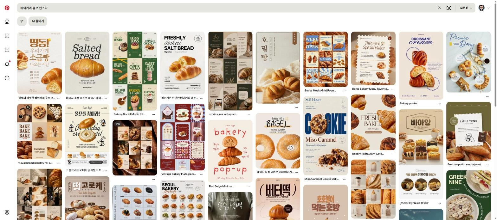
볼 것은 다섯 가지입니다: ① 배치(제목·사진·정보 자리) ② 글자 크기 순서 ③ 색의 역할(바탕·제목·포인트) ④ 사진 찍는 법(구도·빛) ⑤ 정보 보여 주는 방식(시간표·가격 딱지·정보 상자).
직접 시험: 레퍼런스를 "구성 설명"으로 바꾸기
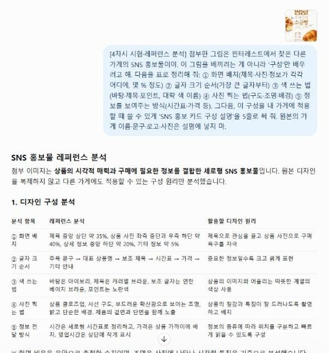
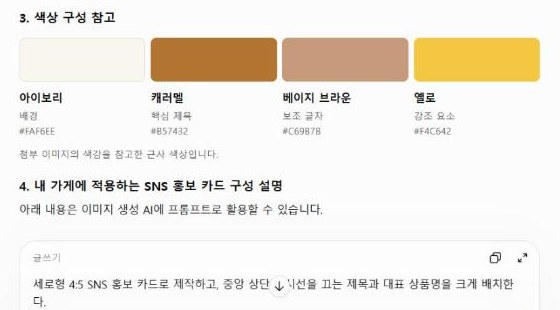
마지막에 원본 문구·로고 없이 "내 가게에 적용할 구성 설명 5줄"을 줍니다. 이 5줄을 아래 실사 SNS형 프롬프트의 [제작] 칸에 붙이면 됩니다.
같은 가게, 두 가지 결과 (직접 생성)
세 가게 모두 예시용 가상 가게입니다. 여섯 장 모두 준 정보의 시간·가격을 정확히 옮겼고, 없는 이벤트를 지어내지 않았습니다.
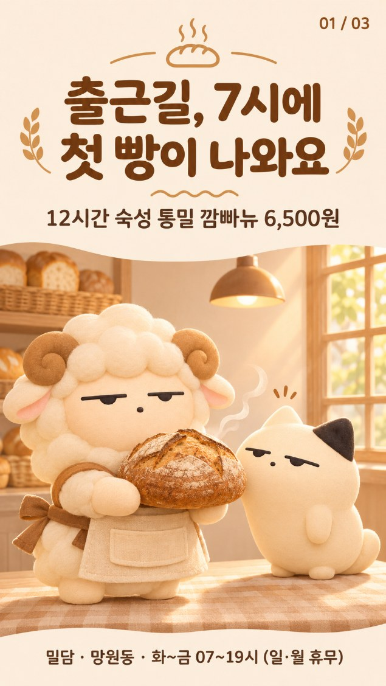
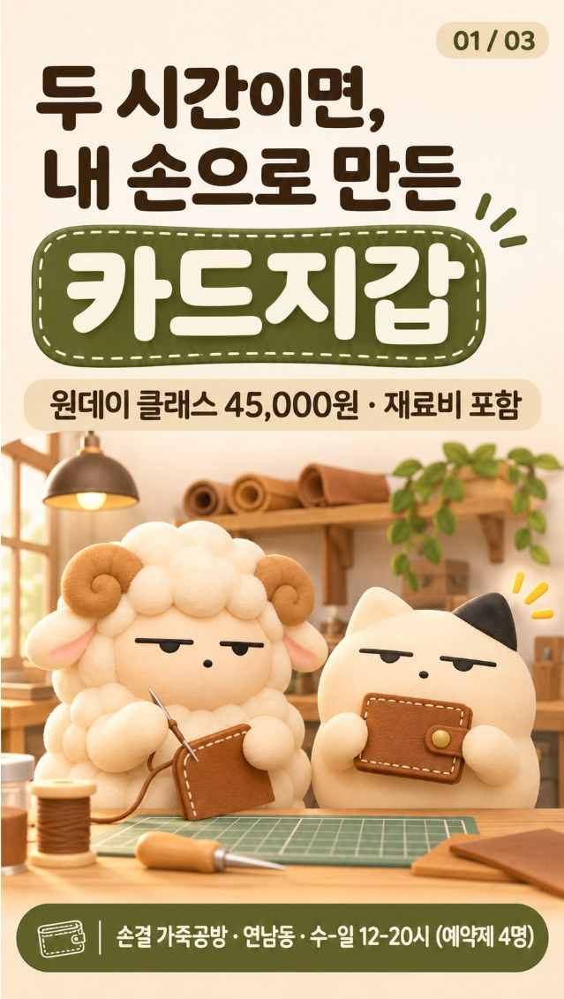
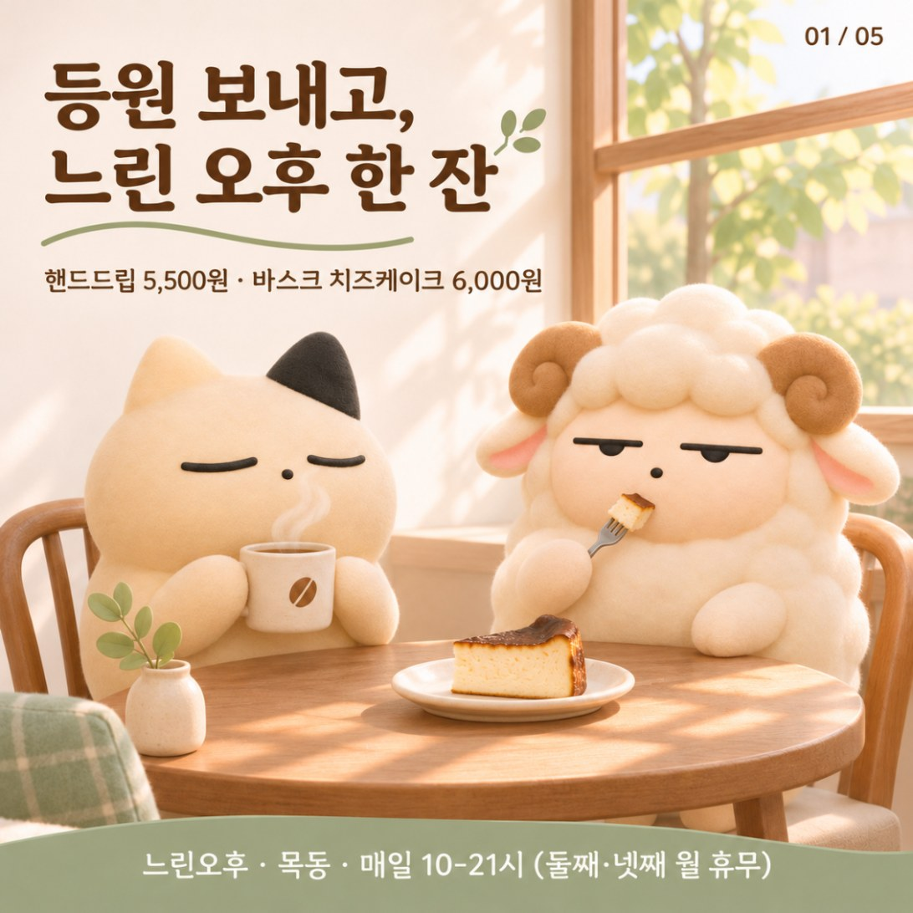
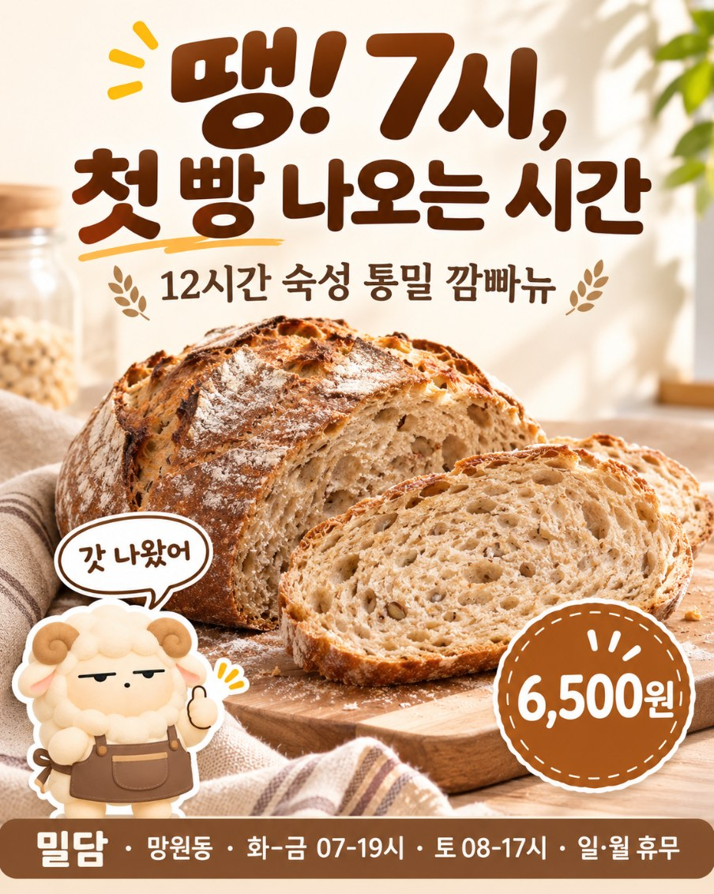
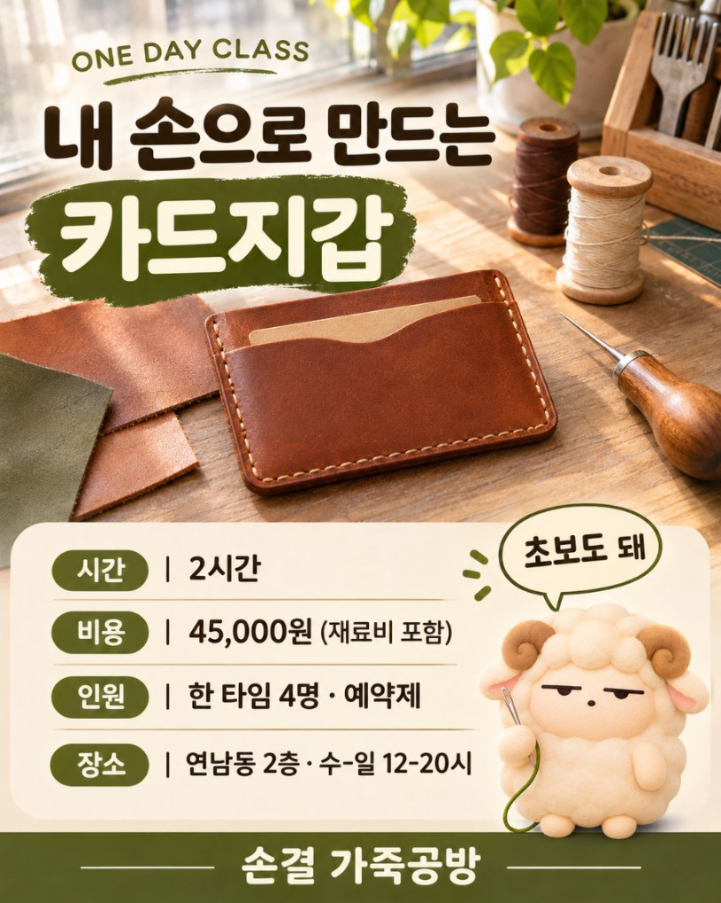
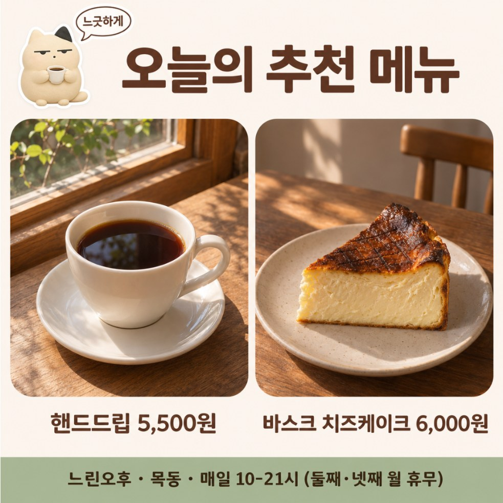
① 내 가게 정보 채우기
메모장에 복사해 채운 뒤, 아래 ②·③ 프롬프트의 [가게 정보] 자리에 통째로 바꿔 넣습니다. 가게가 없으면 예시 빵집 그대로 해 보세요.
[가게 정보] 가게: (종류) '(이름)'(예시용 가상 가게) / 위치: (동네) / 영업: (요일 시간-시간), (휴무) / 대표 상품: (상품 가격) / 주 손님: (누구) / 분위기: (형용사 2-3개) / 대표 색: (색 이름 #HEX), (색 이름 #HEX) / 쓰지 말 것: (피할 색), 과장 표현, 없는 할인·이벤트.
② 캐릭터 활용형
{N} 프로젝트 안 새 채팅에서 {Y} 앵커 그림을 첨부하고 보냅니다.
첨부한 그림은 {N}의 친구 {Y}야. [가게 정보] 가게: 빵집 '밀담'(예시용 가상 가게) / 위치: 서울 망원동 골목 4평 / 영업: 화-금 07:00-19:00, 토 08:00-17:00, 일·월 휴무 / 대표 상품: 12시간 숙성 통밀 깜빠뉴 6,500원, 첫 출고 아침 7시 / 주 손님: 출근길 30-40대 직장인 / 분위기: 갓 구운 빵의 따뜻한 아침, 정감 있는 동네 가게 / 대표 색: 밀 갈색 #8A5A2B, 크림 #F6EBDD / 쓰지 말 것: 남색·회색 같은 차가운 색, '최고·업계 1등' 같은 과장, 없는 할인·이벤트.
이 정보로 카드뉴스 표지 1장만 만들어 줘. (지침 예외: 글자 허용) 단독 카드 1장 / 세로 9:16. 제목 "출근길, 7시에 첫 빵이 나와요" / 본문 "12시간 숙성 통밀 깜빠뉴 6,500원" / 하단 "밀담 · 망원동 · 화-금 07-19시 (일·월 휴무)" / 오른쪽 위 "01 / 03". 장면: {Y}가 앞치마를 두르고 갓 나온 깜빠뉴를 내밀고, {N}는 졸린 눈으로 빵 냄새를 맡는다. 글자는 위 40%, 그림은 아래. 가게 정보에 없는 내용(가격·시간·이벤트)은 지어내지 마. 다른 장 문구·여러 칸은 넣지 마.첨부한 그림은 {N}의 친구 {Y}야. [가게 정보] 가게: 가죽 공방 '손결'(예시용 가상 가게) / 위치: 서울 연남동 2층 / 영업: 수-일 12:00-20:00, 월·화 휴무 / 대표 상품: 원데이 클래스 '카드지갑 만들기' 2시간 45,000원(재료비 포함), 예약제 한 타임 4명 / 주 손님: 주말 데이트 커플, 선물 만들려는 20-30대 / 분위기: 손때 묻은 차분함, 원목 테이블과 가죽 냄새, 조용한 작업실 / 대표 색: 올리브 #5E6B3A, 베이지 #EFE6D2 / 쓰지 말 것: 형광색·쨍한 빨강, '최고·국내 유일' 같은 과장, 없는 할인·이벤트.
이 정보로 카드뉴스 표지 1장만 만들어 줘. (지침 예외: 글자 허용) 단독 카드 1장 / 세로 9:16. 제목 "두 시간이면, 내 손으로 만든 카드지갑" / 본문 "원데이 클래스 45,000원 · 재료비 포함" / 하단 "손결 가죽공방 · 연남동 · 수-일 12-20시 (예약제 4명)" / 오른쪽 위 "01 / 03". 장면: 원목 작업대에서 {Y}가 바늘로 가죽을 꿰매고, {N}는 옆에서 완성된 카드지갑을 들고 뿌듯해한다. 글자는 위 40%, 그림은 아래. 가게 정보에 없는 내용(가격·시간·이벤트)은 지어내지 마. 다른 장 문구·여러 칸은 넣지 마.첨부한 그림은 {N}의 친구 {Y}야. [가게 정보] 가게: 커피숍 '느린오후'(예시용 가상 가게) / 위치: 서울 목동 주택가 1층 / 영업: 매일 10:00-21:00, 둘째·넷째 월요일 휴무 / 대표 상품: 직접 로스팅한 핸드드립 5,500원, 수제 바스크 치즈케이크 6,000원 / 주 손님: 아이 등원 후 들르는 동네 주민, 조용히 책 읽는 손님 / 분위기: 햇빛 드는 창가, 느긋하고 조용한 오후 / 대표 색: 커피 브라운 #6B4A3A, 세이지 #A8B89A, 오프화이트 #FAF6F0 / 쓰지 말 것: 검정 배경·네온 같은 클럽 느낌, '인생 커피·최고' 같은 과장, 없는 할인·이벤트.
이 정보로 카드뉴스 표지 1장만 만들어 줘. (지침 예외: 글자 허용) 단독 카드 1장 / 정사각 1:1. 제목 "등원 보내고, 느린 오후 한 잔" / 본문 "핸드드립 5,500원 · 바스크 치즈케이크 6,000원" / 하단 "느린오후 · 목동 · 매일 10-21시 (둘째·넷째 월 휴무)" / 오른쪽 위 "01 / 05". 장면: 햇빛 드는 창가 자리에서 {N}가 커피잔을 두 손으로 들고 눈을 감고, {Y}는 맞은편에서 치즈케이크를 포크로 떠먹는다. 글자는 왼쪽 위, 그림은 오른쪽 아래. 가게 정보에 없는 내용(가격·시간·이벤트)은 지어내지 마. 다른 장 문구·여러 칸은 넣지 마.③ 실사 SNS형
같은 프로젝트 새 채팅, {Y} 앵커 첨부. 첫 줄 괄호가 "이번만 실사 사진이 주인공"이라는 예외 표시입니다.
(이번 요청은 지침 예외: 글자 허용, 실사 상품 사진이 주인공) 첨부 그림은 {N}의 친구 {Y}야. [가게 정보] 빵집 '밀담'(예시용 가상 가게) / 서울 망원동 골목 4평 / 화-금 07:00-19:00, 토 08:00-17:00, 일·월 휴무 / 대표 상품: 12시간 숙성 통밀 깜빠뉴 6,500원, 첫 출고 아침 7시 / 주 손님: 출근길 30-40대 / 분위기: 갓 구운 빵의 따뜻한 아침 / 대표 색: 밀 갈색 #8A5A2B, 크림 #F6EBDD / 쓰지 말 것: 차가운 색, 과장, 없는 할인·이벤트·출고 시간. [제작] 인스타그램 피드용 홍보 카드 1장, 세로 4:5. 실제 동네 빵집 SNS 홍보물처럼: 크림 바탕 위에 갓 구운 통밀 깜빠뉴 실사 사진이 화면의 60%를 차지하고(리넨 천, 아침 햇살, 단면이 보이게), 위쪽에 큰 굵은 제목 "땡! 7시, 첫 빵 나오는 시간", 그 아래 작은 글자 "12시간 숙성 통밀 깜빠뉴". 오른쪽 아래에 가격 동그라미 딱지 "6,500원". 맨 아래 띠에 "밀담 · 망원동 · 화-금 07-19시 · 토 08-17시 · 일·월 휴무". {Y}는 왼쪽 아래 구석에 손바닥만한 스티커처럼 작게, 앞치마 두르고 엄지 척, 말풍선 "갓 나왔어". 그 밖의 글자·시간·가격은 넣지 마.(이번 요청은 지침 예외: 글자 허용, 실사 상품 사진이 주인공) 첨부 그림은 {N}의 친구 {Y}야. [가게 정보] 가죽 공방 '손결'(예시용 가상 가게) / 서울 연남동 2층 / 수-일 12:00-20:00, 월·화 휴무 / 대표 상품: 원데이 클래스 '카드지갑 만들기' 2시간 45,000원(재료비 포함), 예약제 한 타임 4명 / 주 손님: 주말 커플, 선물 만드는 20-30대 / 분위기: 손때 묻은 차분함, 원목과 가죽 / 대표 색: 올리브 #5E6B3A, 베이지 #EFE6D2 / 쓰지 말 것: 형광색, 과장, 없는 할인·이벤트·날짜. [제작] 인스타그램 피드용 홍보 카드 1장, 세로 4:5. 실제 공방 원데이클래스 모집 포스터처럼: 베이지 바탕, 위쪽 반은 원목 작업대 위 바늘·실·가죽 조각과 완성된 갈색 가죽 카드지갑 실사 사진(위에서 내려다본 구도, 창가 자연광). 사진 위 작은 영문 "ONE DAY CLASS", 그 아래 한글 큰 제목 "내 손으로 만드는 카드지갑". 아래쪽은 연한 베이지 정보 상자 하나에 줄 맞춰 4줄: "시간 | 2시간" / "비용 | 45,000원 (재료비 포함)" / "인원 | 한 타임 4명 · 예약제" / "장소 | 연남동 2층 · 수-일 12-20시". 맨 아래 올리브 띠에 "손결 가죽공방". {Y}는 오른쪽 아래 구석에 스티커처럼 작게, 바늘을 들고 말풍선 "초보도 돼". 그 밖의 글자·날짜·가격은 넣지 마.(이번 요청은 지침 예외: 글자 허용, 실사 상품 사진이 주인공) [가게 정보] 커피숍 '느린오후'(예시용 가상 가게) / 서울 목동 주택가 1층 / 매일 10:00-21:00, 둘째·넷째 월요일 휴무 / 대표 상품: 직접 로스팅한 핸드드립 5,500원, 수제 바스크 치즈케이크 6,000원 / 주 손님: 등원 후 들르는 동네 주민 / 분위기: 햇빛 드는 창가, 느긋한 오후 / 대표 색: 커피 브라운 #6B4A3A, 세이지 #A8B89A, 오프화이트 #FAF6F0 / 쓰지 말 것: 검정 배경·네온, 과장, 없는 할인·이벤트·세트 가격. [제작] 인스타그램 피드용 추천 메뉴 카드 1장, 정사각 1:1. 실제 동네 카페 SNS 메뉴 소개물처럼: 오프화이트 바탕, 위쪽 중앙에 큰 제목 "오늘의 추천 메뉴", 그 아래 가로로 두 칸: 왼쪽은 핸드드립 커피 실사 사진(흰 도자기 잔, 창가 햇살), 아래에 "핸드드립 5,500원" / 오른쪽은 바스크 치즈케이크 실사 사진(탄 격자 단면), 아래에 "바스크 치즈케이크 6,000원". 사진은 둥근 모서리 사각형 또는 원형. 맨 아래 세이지 띠에 "느린오후 · 목동 · 매일 10-21시 (둘째·넷째 월 휴무)". {N}는 왼쪽 위 구석에 스티커처럼 작게, 커피잔을 들고 말풍선 "느긋하게". 그 밖의 글자·가격·메뉴는 넣지 마.- 캐릭터가 크게 나온다 → "캐릭터는 화면의 10% 이하, 구석 스티커"를 다시 보냅니다.
- 가격·시간이 하나라도 다르다 → 그 글자만 적어 "이 글자를 정확히 '6,500원'으로 고쳐 줘".
- 사진이 그림처럼 나온다 → "실사 음식 사진, 자연광, 얕은 심도"를 덧붙입니다.
④ 레퍼런스로 구성 배우기
- 핀터레스트에서 마음에 드는 홍보물 하나를 열고 Win+Shift+S로 그 그림만 캡처해 저장
- 프로젝트 밖 일반 새 채팅에 캡처를 첨부하고 아래 프롬프트 보내기
- 답 맨 끝의 "구성 설명 5줄"을 복사 → ③ 프롬프트의 [제작] 뒤 문장과 바꿔 넣기 (내 가게 정보는 그대로)
첨부한 그림은 핀터레스트에서 찾은 다른 가게의 SNS 홍보물이야. 이 그림을 베끼려는 게 아니라 '구성'만 배우려고 해. 다음을 표로 정리해 줘: ① 화면 배치(제목·사진·정보가 각각 어디에, 몇 % 정도) ② 글자 크기 순서(가장 큰 글자부터) ③ 색 쓰는 법(바탕·제목·포인트, 대략 색 이름) ④ 사진 찍는 법(구도·조명·배경) ⑤ 정보를 보여주는 방식(시간표·가격 등). 그다음, 이 구성을 내 가게에 적용할 때 쓸 수 있게 'SNS 홍보 카드 구성 설명'을 5줄로 써 줘. 원본의 가게 이름·문구·로고·사진은 설명에 넣지 마.
두 그림을 첨부했어. 둘 다 다른 가게 홍보물이야. 배치·글자 순서·색·사진·정보 방식을 표로 나란히 비교하고, 내 가게(위 [가게 정보])에는 어느 쪽 구성이 더 맞는지 이유 두 가지와 함께 골라 줘. 원본 문구·로고는 쓰지 마.
검수하고, 휴대폰 목업으로 확인하고, 마무리
원고가 맞아도 이미지 속 한 글자, 날짜, 출처에서 실수가 나옵니다. 파일을 직접 열어 읽어야 끝입니다.
올리기 전 체크리스트
| 볼 것 | 통과 기준 |
|---|---|
| 내용 | 표지의 질문에 마지막 장이 답한다 |
| 글자 | 내려받은 원본에서 제목·본문·출처를 한 글자씩 읽었다. 이름·숫자·날짜가 기획표와 같다 |
| 출처 | 하단 출처 줄이 잘리지 않았다, 매체·날짜가 있다 |
| 장수·순서 | 01부터 빠짐없이, 같은 그림 두 번 없음 |
| 캐릭터 | 장마다 같은 생김새, 포즈는 서로 다름 |
| 휴대폰 | 작게 줄여도 제목이 읽힌다 |
스마트폰 목업으로 보기
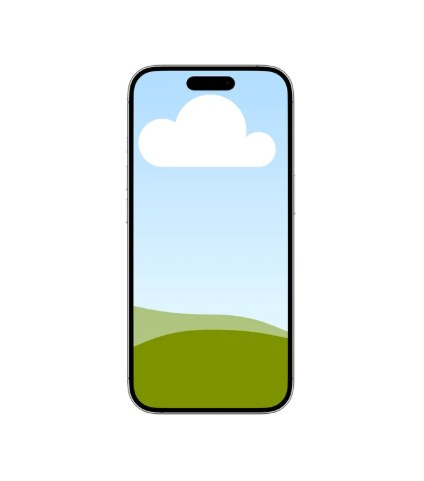
9:16 카드를 넣으면 위아래가 조금 잘립니다. 더블클릭 → 맞춤으로 번호와 출처가 화면 안에 오게 맞춰 보세요. 잘리는 위치가 곧 "휴대폰에서 놓치기 쉬운 자리"입니다.
오늘 배운 것 한 줄씩
① 검수를 챗GPT에게도 시키기 + 다음 시간 준비
지금까지 만든 카드 이미지를 기획표와 한 장씩 대조해 줘. 각 이미지에서 실제로 보이는 제목·본문·출처·번호를 그대로 읽어 적고, 기획표와 다른 글자, 잘린 글자, 틀린 날짜·숫자가 있으면 장 번호와 함께 표로 알려 줘. 고칠 장만 골라 줘.
- 같은 자료로 9:16 요약판 3장 + 1:1 심화판 5장을 모두 만들어 보세요.
- 카드뉴스를 올릴 때 함께 쓸 짧은 소개 글도 부탁해 보세요: "이 카드뉴스를 카톡방에 올릴 때 붙일 소개 글 두 줄. 마크다운 기호 없이 평문으로, 마지막 줄에 출처 링크."
다음 시간(인스타툰)에도 오늘 만든 두 캐릭터의 포즈 9칸과 프로젝트를 그대로 씁니다. 지우지 말고 두세요.
챗GPT에 카드뉴스 스킬 넣고 쓰기
오늘 배운 순서와 규칙을 스킬 하나로 챗GPT에 넣어 두면, 다음부터는 "우리 가게 홍보 카드 만들어 줘" 한 줄만으로 시작할 수 있습니다.
김에듀 카드뉴스 스킬 — 오늘 순서를 통째로 챗GPT에 넣기
스킬(skill)은 "이 일은 이 순서로 하라"는 작업 설명서 묶음입니다. 한 번 설치해 두면 매번 긴 프롬프트를 붙이지 않아도 챗GPT가 오늘 배운 순서(질문 → 근거 → 기획 → 한 장씩 → 검수)와 가게 정보 칸·저작권 기준을 따라 합니다.
⬇ 자료 받기 · 카드뉴스 스킬 (card-news-kimedu.zip)| 들어 있는 것 | 하는 일 |
|---|---|
| SKILL.md | 전체 순서 · 처음에 물어볼 것 · 가게 정보가 비면 멈추고 묻기 |
| 가게 홍보 작업지 | 정보 일곱 칸 · 캐릭터형/실사형 틀 · 레퍼런스 분석 요청문 |
| 기획 작업지 · 검수표 | 근거 고르기 · 장별 기획 · 올리기 전 대조 |
| 저작권 작업지 | 해도 되는 것/안 되는 것 · 출처 표기 |
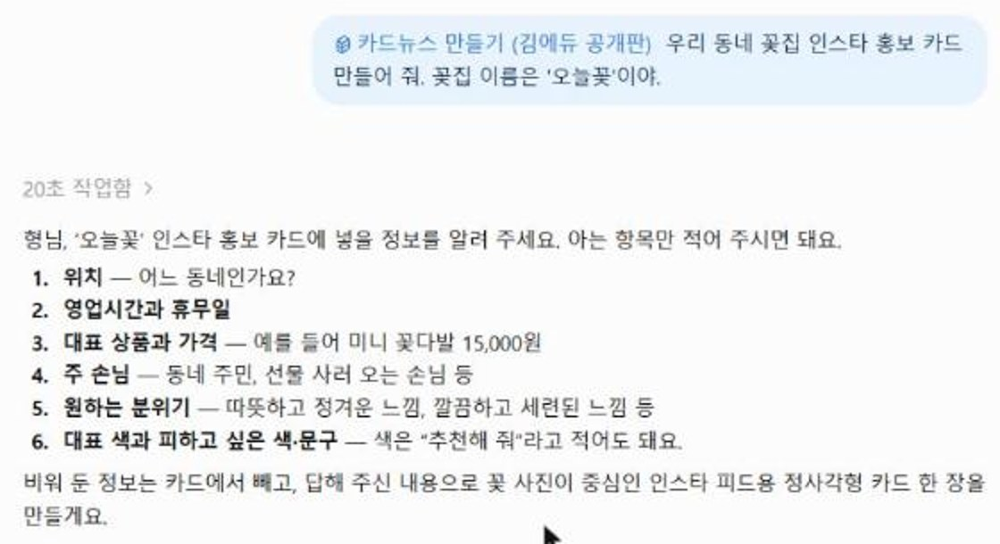
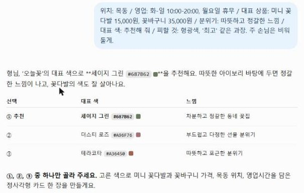
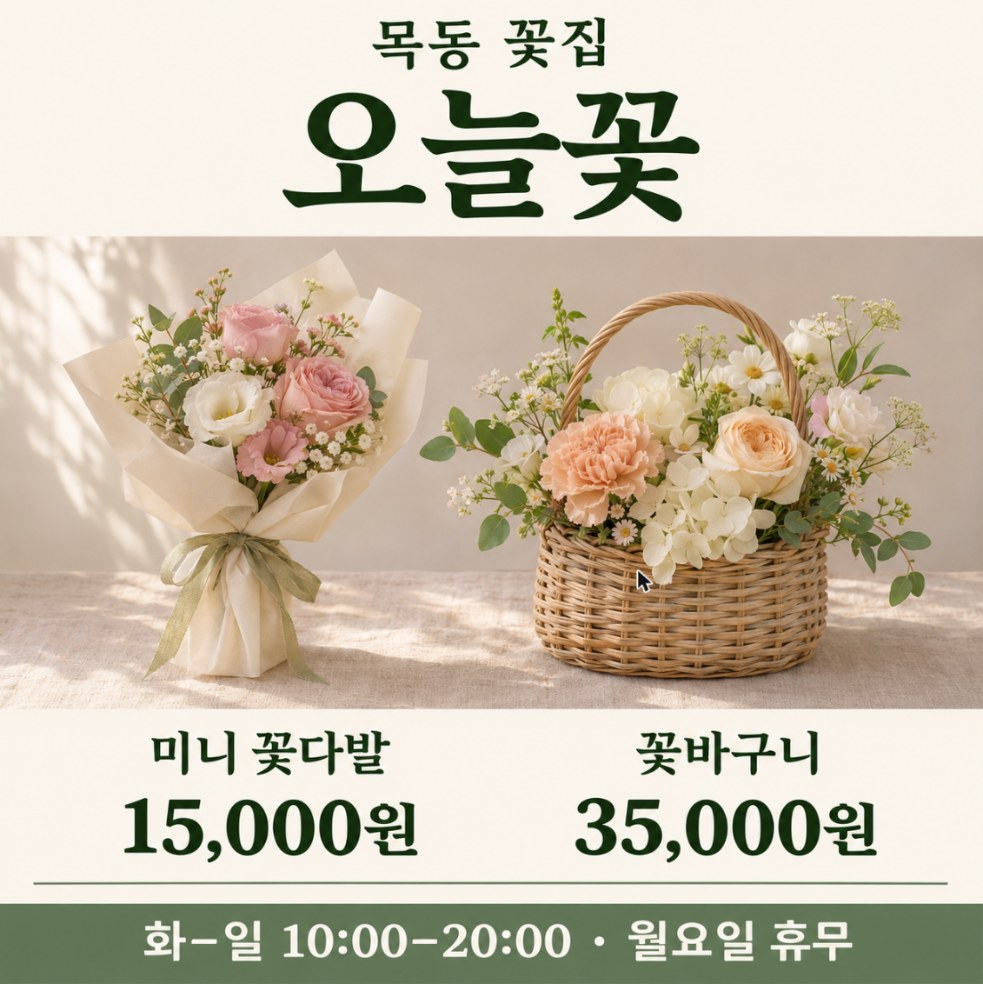
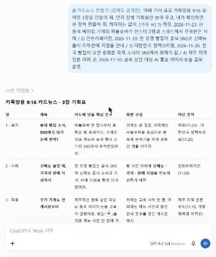
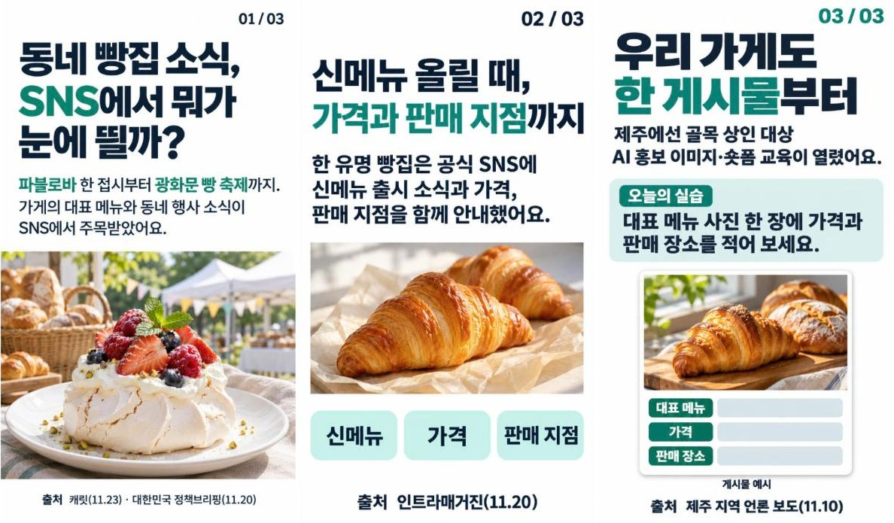
- 스킬 메뉴는 요금제·관리자 설정에 따라 안 보일 수 있습니다. 안 보이면 이 교안의 프롬프트를 그대로 쓰면 됩니다.
- 남이 준 스킬은 설치 전에 내용을 열어 보세요. 이 스킬은 글로 된 작업 설명서(.md)와 아이콘만 들어 있고, 실행되는 프로그램은 없습니다.
① 챗GPT에 스킬 넣기 (설치)
- 위 자료 받기 버튼으로 card-news-kimedu.zip을 받습니다. 압축을 풀지 마세요.
- 챗GPT 왼쪽 세로 메뉴에서 → 위쪽 을 누릅니다.
- 오른쪽 위 → → 받은 zip을 끌어다 놓거나 눌러서 고릅니다.
- "스킬 업로드됨"이 뜨면 . 설치됨 목록에 「카드뉴스 만들기 (김에듀 공개판)」이 보이면 끝입니다.
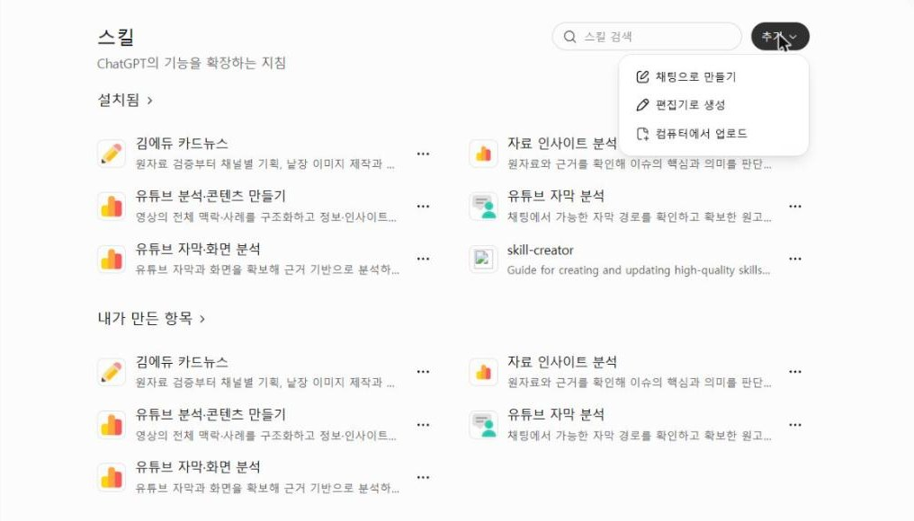
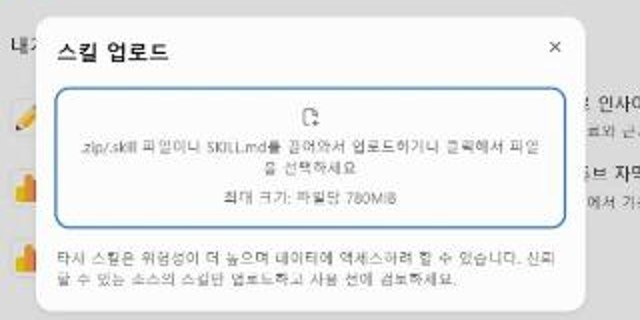
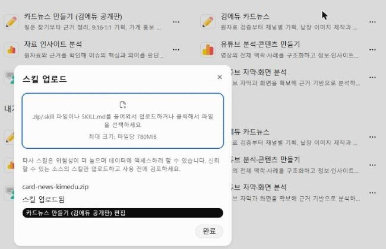
- 플러그인·스킬 메뉴가 없다 → 요금제나 관리자 설정 때문일 수 있습니다. 이 교안 STEP 5~9의 프롬프트를 그대로 쓰면 같은 결과를 낼 수 있습니다.
- 업로드가 안 된다 → 압축을 풀었다면 다시 받은 zip 파일 그대로 올립니다.
② 스킬로 내 가게 카드 만들기 (사용)
스킬 ··· → 으로 연 창에서, 스킬 표시(연필 아이콘 이름)는 남기고 뒤의 예시 글만 지운 뒤 보냅니다.
우리 가게 인스타 홍보 카드 만들어 줘. 가게 이름은 '(가게 이름)'이야.
스킬이 일곱 칸을 물으면 STEP 9 ①에서 채운 가게 정보를 붙여 답하면 됩니다.
아래 자료로 카톡방용 9:16 요약판 3장과 인스타 피드용 1:1 심화판 5장을 기획해 줘. 먼저 장별 기획표만 보여 주고, 내가 확인하면 한 장씩 만들어 줘. --- (여기에 기사 표나 영상 스크립트 붙여 넣기)